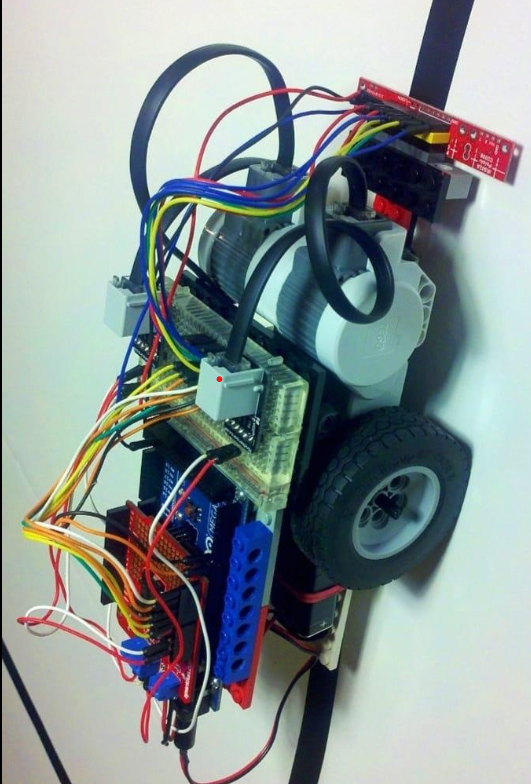
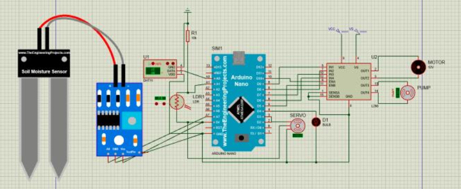
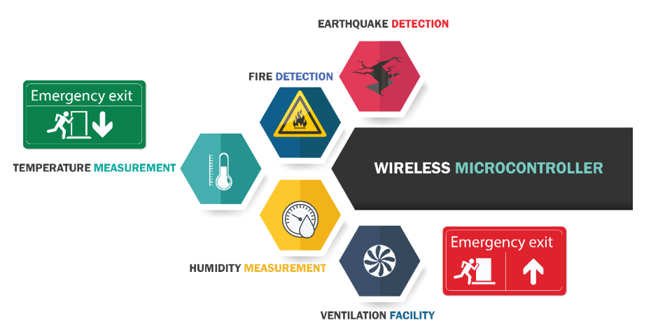

Senior at Rajshahi University of Engineering & Technology (RUET). I am a driven individual with a fervent passion for literature and an unwavering commitment to the world of technology. My academic journey at RUET has not only equipped me with the necessary engineering skills but has also fueled my desire to bridge the gap between the realms of technology and creativity. Beyond my academic pursuits, I am actively involved in the realm of Robotics, Automation, and Computer Vision. In my quest to blend innovation with storytelling. As I approach the culmination of my academic journey, I am excited about the prospect of translating my passion into impactful contributions that push the boundaries of what technology can achieve.
Education:-
B.Sc. in Mechatronics Engineering,
Class year of 2024
International Summer Program
Class year of 2021
HSC
Class year of 2018
SSC
School year of 2015
Collaborative Robot Safety: Design & Deployment
University At Buffalo and The State University of New York | Coursera
Issued Oct 2023
Supervised Machine Learning: Regression and Classification
DeepLearning.AI
Issued Oct 2023 Issued
Basic Image Classification with TensorFlow
Coursera
Issued Sept 2023
Build Your First Machine Learning Pipeline using DataIku
Coursera
Issued Sept 2023
Programming for Everybody(Getting Started with Python)
University of Michigan| Coursera
Issued Oct 2023
Deep Learning with Pytorch: Image Segmentation
University of Michigan| Coursera
Issued Sept 2023
Conference: 5th International Conference on Mechanical, Industrial and Materials Engineering 2022 (ICMIME2022)At: Rajshahi University of Engineering & Technology(RUET)
Exploring the Enigmatic Realms of Haruki Murakami: A Journey Through '’Kafka on the Shore’’
"And once the storm is over, you won’t remember how you made it through, how you managed to survive. You won’t even be sure, whether the storm is really over. But one thing is certain. When you come out of the storm, you won’t be the same person who walked in. That’s what this storm’s all about."
Line Follower Robot
Key Features: Developed a custom hardware platform integrating infrared sensors for line detection and motors for precise control. Implemented a PID (Proportional-Integral-Derivative) control algorithm for accurate line tracking. Achieved real-time responsiveness to adapt to various line shapes and navigate complex paths autonomously. The Line Following Robot successfully demonstrated its ability to follow lines of varying shapes and complexities, showcasing its practical applications in industrial automation and educational robotics.
LFR is an autonomous robot designed to follow a visible line or path on the ground. It does this by using various sensors and control systems to detect and track the line's position, allowing it to navigate along the path without human intervention.
Advanced Automated Greenhouse System
The project was microcontroller-based. The project named "Advanced Automated Greenhouse System," which transforms agriculture. To create a complex smart irrigation system, we used an ATmega32 microprocessor in conjunction with soil and temperature sensors. By orchestrating precise control over environmental factors and soil conditions, this ground-breaking system promotes the best possible crop development while minimizing resource use. It illustrates the potential of automation in improving agricultural yields and minimizing environmental effect, and it marks a crucial step towards efficient and sustainable agriculture. I'm overjoyed to have a role in the project.
Integrated LDR, soil, and temperature sensors, directed by an Arduino Nano microcontroller. Revolutionizing agriculture, it gathers crucial data for smart irrigation, ensuring optimal light for plant growth. A visual testament to our commitment to sustainable, cutting-edge automation and a greener, smarter agricultural future.
Disaster Management and Evacuation System
In regions prone to seismic activity, the threat of earthquakes poses an imminent danger to both life and infrastructure, necessitating robust disaster management strategies. The project titled "Earthquake Disaster Management and Safe Evacuation" represents an innovative endeavor aimed at revolutionizing the response mechanisms to seismic events. The integration of sophisticated components such as humidity and temperature sensors, flame sensors, vibration sensors, alongside the powerful ESP32 microcontroller, signifies a holistic approach to addressing the multifaceted challenges posed by earthquakes.
The implementation of our disaster management system, incorporating various sensors transmitting both digital and analog signals, has yielded commendable results. Throughout rigorous testing and operational checks, the system has demonstrated flawless functionality across all components. The successful interfacing with cloud IOT Blink for software integration has streamlined data monitoring and analysis, ensuring real-time insights into critical events. The system's ability to promptly detect and respond to seismic activity and fire outbreaks is a standout achievement. Upon the detection of an earthquake or flame, the immediate activation of the buzzer alert and the deployment of safety evacuation ramps showcase the system's readiness to respond swiftly to potential crises.